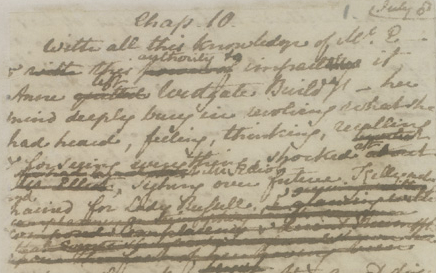

Rękopisy pani Austen
Uwielbiam studiować manuskrypty ludzi pióra. Dają one głębokie, nieomal intymne wejrzenie w charakter i styl samego twórcy, nadto odkrywają przed nami kwestie, których ostateczny, drukowany tekst poznać nie pozwala. Rilke na przykład posługiwał się przez całe życie dwoma różniącymi się nieco alfabetami — łacińskim i gotyckim. Nawet w obrębie tego samego listu używał ich czasem zamiennie, dostosowując swe odręczne pismo do charakteru adresata.
Literatura angielska ma dziś powód do dumy. Oto po trzech latach wytężonej pracy udostępniono właśnie zbiór zdigitalizowanych manuskryptów Jane Austen. Niejako przy okazji studiów nad jej rękopisami okazało się, iż sławna pisarka była znacznie odważniejszą językową eksperymentatorką, niż można by sądzić, czytając ostateczne wersje jej dzieł. Teksty Austen, jak donosi angielska prasa (Telegraph oraz Chronicle), zostały prawdopodobnie nieco wygładzone przez Williama Gifforda, lektora wydawnictwa, w którym publikowała swe książki.
Nasza okrutna komputerowa epoka nie lubi rękopisów. Pewnie w ogóle ich nie zna. Pozbawi przyszłe pokolenia przyjemności obcowania z najbardziej osobistym, namacalnym świadectwem owej „godziny tworzenia”.